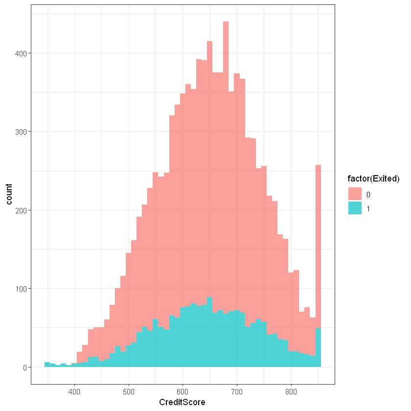
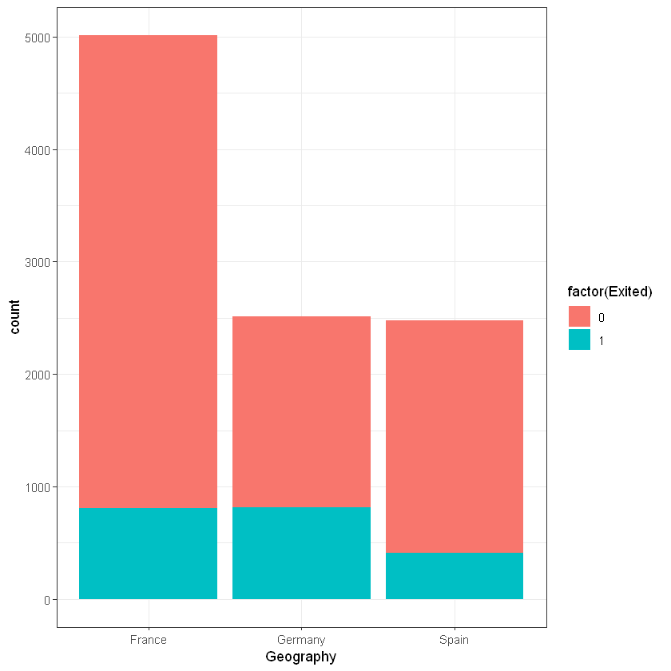
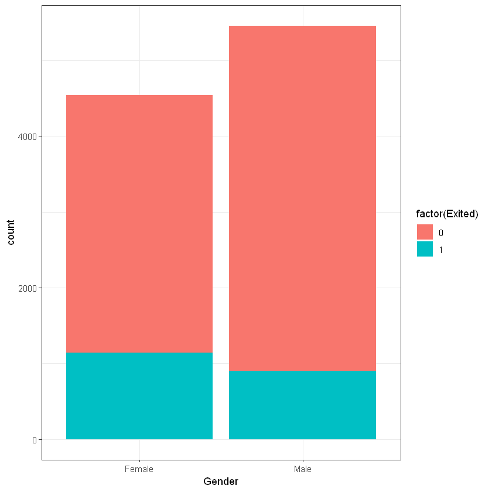
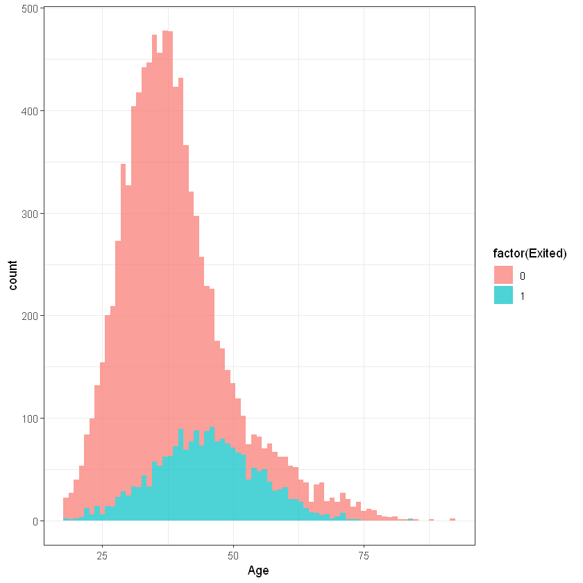
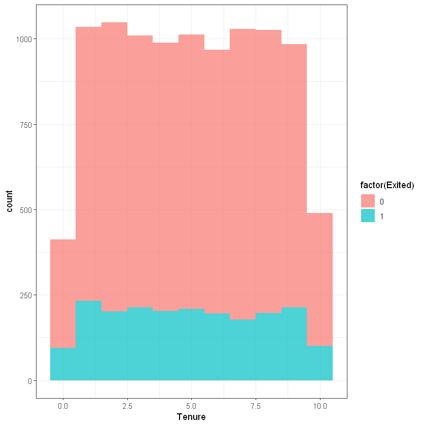
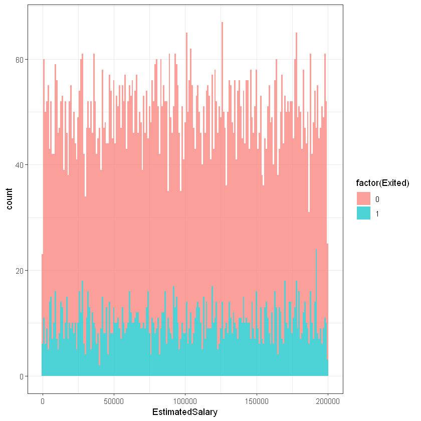
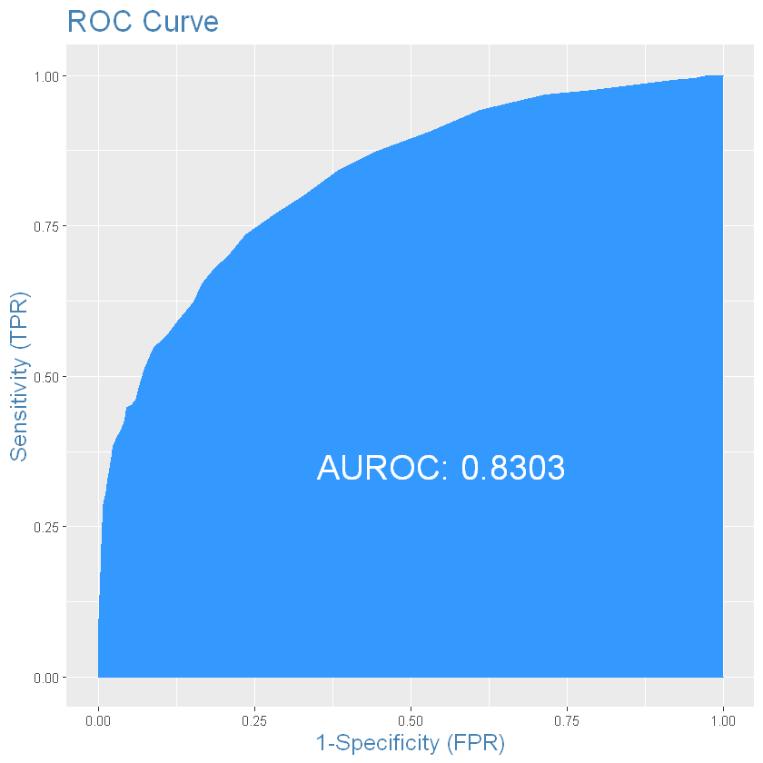
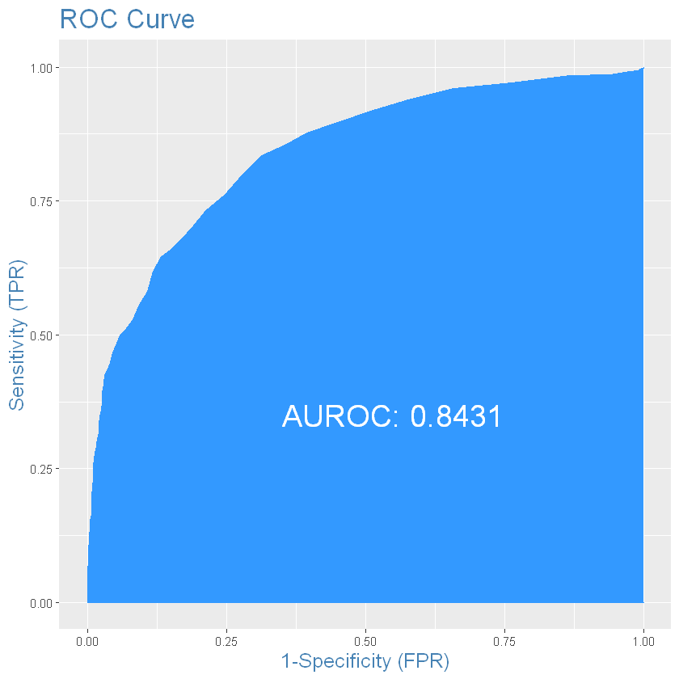

Sys.setlocale("LC_CTYPE", "ukrainian")
options(warn = -1)
'Ukrainian_Ukraine.1251'
Курс: “Математичне моделювання в R”
Sys.setlocale("LC_CTYPE", "ukrainian")
options(warn = -1)Джерело: https://www.kaggle.com/barelydedicated/bank-customer-churn-modeling.
Завантажимо файли з даними:
customers <- read.csv("data/customers.csv")
products <- read.csv("data/products.csv")
cards <- read.csv("data/cards.csv")Цей датасет містить такі стовпці:
RowNumber - номер рядка.CustomerId - ідентифікатор клієнта.Surname - прізвище клієнта.CreditScore - кредитний рейтинг клієнта.Geography - регіон.Gender - стать.Age - вік.Tenure - час обслуговування цього клієнта в банку.IsActiveMember - активний клієнт, виконує операції.EstimatedSalary - заробітна плата.Exited - залишив/не залишив банк.Інформація про клієнтів:
str(customers)'data.frame': 10000 obs. of 11 variables:
$ RowNumber : int 1 2 3 4 5 6 7 8 9 10 ...
$ CustomerId : int 15634602 15647311 15619304 15701354 15737888 15574012 15592531 15656148 15792365 15592389 ...
$ Surname : chr "Hargrave" "Hill" "Onio" "Boni" ...
$ CreditScore : int 619 608 502 699 850 645 822 376 501 684 ...
$ Geography : chr "France" "Spain" "France" "France" ...
$ Gender : chr "Female" "Female" "Female" "Female" ...
$ Age : int 42 41 42 39 43 44 50 29 44 27 ...
$ Tenure : int 2 1 8 1 2 8 7 4 4 2 ...
$ IsActiveMember : int 1 1 0 0 1 0 1 0 1 1 ...
$ EstimatedSalary: num 101349 112543 113932 93827 79084 ...
$ Exited : int 1 0 1 0 0 1 0 1 0 0 ...head(customers)| RowNumber | CustomerId | Surname | CreditScore | Geography | Gender | Age | Tenure | IsActiveMember | EstimatedSalary | Exited | |
|---|---|---|---|---|---|---|---|---|---|---|---|
| <int> | <int> | <chr> | <int> | <chr> | <chr> | <int> | <int> | <int> | <dbl> | <int> | |
| 1 | 1 | 15634602 | Hargrave | 619 | France | Female | 42 | 2 | 1 | 101348.88 | 1 |
| 2 | 2 | 15647311 | Hill | 608 | Spain | Female | 41 | 1 | 1 | 112542.58 | 0 |
| 3 | 3 | 15619304 | Onio | 502 | France | Female | 42 | 8 | 0 | 113931.57 | 1 |
| 4 | 4 | 15701354 | Boni | 699 | France | Female | 39 | 1 | 0 | 93826.63 | 0 |
| 5 | 5 | 15737888 | Mitchell | 850 | Spain | Female | 43 | 2 | 1 | 79084.10 | 0 |
| 6 | 6 | 15574012 | Chu | 645 | Spain | Male | 44 | 8 | 0 | 149756.71 | 1 |
customersОглянемо дані колекції customers візуально та за допомогою крос-таблиць:
library(gmodels)
library(ggplot2)Кредитний рейтинг (CreditScore):
ggplot(customers, aes(x=CreditScore, fill=factor(Exited))) +
geom_histogram(binwidth = 10, alpha=0.7) + theme_bw() 
Регіон/країна (Geography):
ggplot(customers, aes(x=Geography, fill=factor(Exited))) +
geom_bar(position = "stack") + theme_bw()
CrossTable(customers$Geography, customers$Exited)
Cell Contents
|-------------------------|
| N |
| Chi-square contribution |
| N / Row Total |
| N / Col Total |
| N / Table Total |
|-------------------------|
Total Observations in Table: 10000
| customers$Exited
customers$Geography | 0 | 1 | Row Total |
--------------------|-----------|-----------|-----------|
France | 4204 | 810 | 5014 |
| 11.188 | 43.736 | |
| 0.838 | 0.162 | 0.501 |
| 0.528 | 0.398 | |
| 0.420 | 0.081 | |
--------------------|-----------|-----------|-----------|
Germany | 1695 | 814 | 2509 |
| 45.927 | 179.537 | |
| 0.676 | 0.324 | 0.251 |
| 0.213 | 0.400 | |
| 0.170 | 0.081 | |
--------------------|-----------|-----------|-----------|
Spain | 2064 | 413 | 2477 |
| 4.251 | 16.617 | |
| 0.833 | 0.167 | 0.248 |
| 0.259 | 0.203 | |
| 0.206 | 0.041 | |
--------------------|-----------|-----------|-----------|
Column Total | 7963 | 2037 | 10000 |
| 0.796 | 0.204 | |
--------------------|-----------|-----------|-----------|
Стать (Gender):
ggplot(customers, aes(x=Gender, fill=factor(Exited))) +
geom_bar(position = "stack") + theme_bw()
CrossTable(customers$Gender, customers$Exited)
Cell Contents
|-------------------------|
| N |
| Chi-square contribution |
| N / Row Total |
| N / Col Total |
| N / Table Total |
|-------------------------|
Total Observations in Table: 10000
| customers$Exited
customers$Gender | 0 | 1 | Row Total |
-----------------|-----------|-----------|-----------|
Female | 3404 | 1139 | 4543 |
| 12.611 | 49.298 | |
| 0.749 | 0.251 | 0.454 |
| 0.427 | 0.559 | |
| 0.340 | 0.114 | |
-----------------|-----------|-----------|-----------|
Male | 4559 | 898 | 5457 |
| 10.499 | 41.041 | |
| 0.835 | 0.165 | 0.546 |
| 0.573 | 0.441 | |
| 0.456 | 0.090 | |
-----------------|-----------|-----------|-----------|
Column Total | 7963 | 2037 | 10000 |
| 0.796 | 0.204 | |
-----------------|-----------|-----------|-----------|
Вік (Age):
ggplot(customers, aes(x=Age, fill=factor(Exited))) +
geom_histogram(binwidth = 1, alpha=0.7) + theme_bw() 
Час обслуговування клієнта (Tenure):
ggplot(customers, aes(x=Tenure, fill=factor(Exited))) +
geom_histogram(binwidth = 1, alpha=0.7) + theme_bw() 
Активність (IsActiveMember):
CrossTable(customers$IsActiveMember, customers$Exited)
Cell Contents
|-------------------------|
| N |
| Chi-square contribution |
| N / Row Total |
| N / Col Total |
| N / Table Total |
|-------------------------|
Total Observations in Table: 10000
| customers$Exited
customers$IsActiveMember | 0 | 1 | Row Total |
-------------------------|-----------|-----------|-----------|
0 | 3547 | 1302 | 4849 |
| 25.577 | 99.984 | |
| 0.731 | 0.269 | 0.485 |
| 0.445 | 0.639 | |
| 0.355 | 0.130 | |
-------------------------|-----------|-----------|-----------|
1 | 4416 | 735 | 5151 |
| 24.077 | 94.122 | |
| 0.857 | 0.143 | 0.515 |
| 0.555 | 0.361 | |
| 0.442 | 0.073 | |
-------------------------|-----------|-----------|-----------|
Column Total | 7963 | 2037 | 10000 |
| 0.796 | 0.204 | |
-------------------------|-----------|-----------|-----------|
Заробітна плата (EstimatedSalary):
ggplot(customers, aes(x=EstimatedSalary, fill=factor(Exited))) +
geom_histogram(binwidth = 1000, alpha=0.7) + theme_bw() 
Exited:
CrossTable(customers$Exited)
Cell Contents
|-------------------------|
| N |
| N / Table Total |
|-------------------------|
Total Observations in Table: 10000
| 0 | 1 |
|-----------|-----------|
| 7963 | 2037 |
| 0.796 | 0.204 |
|-----------|-----------|
cardsІнформація про карти клієнта:
str(cards)'data.frame': 13545 obs. of 4 variables:
$ CustomerId : int 15634602 15647311 15647311 15619304 15619304 15701354 15701354 15737888 15737888 15574012 ...
$ CardNo : int 684618 357092 802678 888594 987103 507476 928960 370210 935036 581042 ...
$ IsCreditCard: int 1 0 0 1 0 0 0 1 0 1 ...
$ Balance : num 5 41922 41913 79846 79859 ...head(cards)| CustomerId | CardNo | IsCreditCard | Balance | |
|---|---|---|---|---|
| <int> | <int> | <int> | <dbl> | |
| 1 | 15634602 | 684618 | 1 | 5.00 |
| 2 | 15647311 | 357092 | 0 | 41921.93 |
| 3 | 15647311 | 802678 | 0 | 41912.93 |
| 4 | 15619304 | 888594 | 1 | 79846.40 |
| 5 | 15619304 | 987103 | 0 | 79859.40 |
| 6 | 15701354 | 507476 | 0 | 28.00 |
summary(cards) CustomerId CardNo IsCreditCard Balance
Min. :15565701 Min. :100231 Min. :0.0000 Min. : 0
1st Qu.:15628272 1st Qu.:323587 1st Qu.:0.0000 1st Qu.: 24
Median :15691011 Median :545073 Median :0.0000 Median : 52991
Mean :15690848 Mean :548414 Mean :0.4688 Mean : 51096
3rd Qu.:15752816 3rd Qu.:774943 3rd Qu.:1.0000 3rd Qu.: 77276
Max. :15815690 Max. :999985 Max. :1.0000 Max. :221549 productsІнформація про продукти клієнта:
str(products)'data.frame': 13862 obs. of 2 variables:
$ CustomerId : int 15634602 15647311 15619304 15619304 15619304 15701354 15701354 15737888 15574012 15574012 ...
$ ProductName: chr "PROD_1" "PROD_1" "PROD_1" "PROD_2" ...head(products)| CustomerId | ProductName | |
|---|---|---|
| <int> | <chr> | |
| 1 | 15634602 | PROD_1 |
| 2 | 15647311 | PROD_1 |
| 3 | 15619304 | PROD_1 |
| 4 | 15619304 | PROD_2 |
| 5 | 15619304 | PROD_3 |
| 6 | 15701354 | PROD_1 |
Сформуємо додаткові змінні на основі наявних даних:
Balance - сума по усіх картах клієнат.NumOfProducts - кількість продуктів банку, які використовує клієнт.HasCreditCard - dummy-змінна, наявність кредитної карти у клієнта.NumOfProductsВарто звернути увагу, що генерувати нові фічі можна із використанням можлиовстей агрегації та фільтрування даних (наприклад, методи пакету dplyr) або за допомогою простих алгоритмічних структур (цикли, розгалуження).
Для R використання циклів для подібних задач є не досить хорошим рішенням, адже код виглядає складно і виконується повільно. Проте ми напишемо для требування і пояснення приклади з використанням обох підходів.
Імперативний підхід до програмування:
# Створюємо пусту змінну
customers$NumOfProducts <- c(0)
for(i in 1:nrow(customers))
{
id <- customers$CustomerId[i]
prods <- subset(products, CustomerId == id)
customers$NumOfProducts[i] <- nrow(prods)
}
head(customers, 4)| RowNumber | CustomerId | Surname | CreditScore | Geography | Gender | Age | Tenure | IsActiveMember | EstimatedSalary | Exited | NumOfProducts | |
|---|---|---|---|---|---|---|---|---|---|---|---|---|
| <int> | <int> | <chr> | <int> | <chr> | <chr> | <int> | <int> | <int> | <dbl> | <int> | <dbl> | |
| 1 | 1 | 15634602 | Hargrave | 619 | France | Female | 42 | 2 | 1 | 101348.88 | 1 | 1 |
| 2 | 2 | 15647311 | Hill | 608 | Spain | Female | 41 | 1 | 1 | 112542.58 | 0 | 1 |
| 3 | 3 | 15619304 | Onio | 502 | France | Female | 42 | 8 | 0 | 113931.57 | 1 | 3 |
| 4 | 4 | 15701354 | Boni | 699 | France | Female | 39 | 1 | 0 | 93826.63 | 0 | 2 |
Декларативний приклад коду:
library(dplyr)
customers_tmp <- customers |>
left_join(products |>
group_by(CustomerId) |>
mutate(NumOfProducts = n()) |>
select(CustomerId, NumOfProducts) |> distinct(), by = "CustomerId")
head(customers_tmp, 4)
# P.S. Це набагато швидше
Attaching package: 'dplyr'
The following objects are masked from 'package:stats':
filter, lag
The following objects are masked from 'package:base':
intersect, setdiff, setequal, union
| RowNumber | CustomerId | Surname | CreditScore | Geography | Gender | Age | Tenure | IsActiveMember | EstimatedSalary | Exited | NumOfProducts.x | NumOfProducts.y | |
|---|---|---|---|---|---|---|---|---|---|---|---|---|---|
| <int> | <int> | <chr> | <int> | <chr> | <chr> | <int> | <int> | <int> | <dbl> | <int> | <dbl> | <int> | |
| 1 | 1 | 15634602 | Hargrave | 619 | France | Female | 42 | 2 | 1 | 101348.88 | 1 | 1 | 1 |
| 2 | 2 | 15647311 | Hill | 608 | Spain | Female | 41 | 1 | 1 | 112542.58 | 0 | 1 | 1 |
| 3 | 3 | 15619304 | Onio | 502 | France | Female | 42 | 8 | 0 | 113931.57 | 1 | 3 | 3 |
| 4 | 4 | 15701354 | Boni | 699 | France | Female | 39 | 1 | 0 | 93826.63 | 0 | 2 | 2 |
HasCreditCardcustomers <- customers |>
left_join(cards |>
group_by(CustomerId) |>
summarise(HasCreditCard = ifelse(sum(IsCreditCard) == 0, 0, 1)) |>
select(CustomerId, HasCreditCard) |> distinct(), by = "CustomerId")
head(customers, 4)| RowNumber | CustomerId | Surname | CreditScore | Geography | Gender | Age | Tenure | IsActiveMember | EstimatedSalary | Exited | NumOfProducts | HasCreditCard | |
|---|---|---|---|---|---|---|---|---|---|---|---|---|---|
| <int> | <int> | <chr> | <int> | <chr> | <chr> | <int> | <int> | <int> | <dbl> | <int> | <dbl> | <dbl> | |
| 1 | 1 | 15634602 | Hargrave | 619 | France | Female | 42 | 2 | 1 | 101348.88 | 1 | 1 | 1 |
| 2 | 2 | 15647311 | Hill | 608 | Spain | Female | 41 | 1 | 1 | 112542.58 | 0 | 1 | 0 |
| 3 | 3 | 15619304 | Onio | 502 | France | Female | 42 | 8 | 0 | 113931.57 | 1 | 3 | 1 |
| 4 | 4 | 15701354 | Boni | 699 | France | Female | 39 | 1 | 0 | 93826.63 | 0 | 2 | 0 |
Balancecustomers <- customers |>
left_join(cards |>
group_by(CustomerId) |>
mutate(Balance = round(sum(Balance))) |>
select(CustomerId, Balance) |> distinct(), by = "CustomerId")
head(customers, 4)| RowNumber | CustomerId | Surname | CreditScore | Geography | Gender | Age | Tenure | IsActiveMember | EstimatedSalary | Exited | NumOfProducts | HasCreditCard | Balance | |
|---|---|---|---|---|---|---|---|---|---|---|---|---|---|---|
| <int> | <int> | <chr> | <int> | <chr> | <chr> | <int> | <int> | <int> | <dbl> | <int> | <dbl> | <dbl> | <dbl> | |
| 1 | 1 | 15634602 | Hargrave | 619 | France | Female | 42 | 2 | 1 | 101348.88 | 1 | 1 | 1 | 5 |
| 2 | 2 | 15647311 | Hill | 608 | Spain | Female | 41 | 1 | 1 | 112542.58 | 0 | 1 | 0 | 83835 |
| 3 | 3 | 15619304 | Onio | 502 | France | Female | 42 | 8 | 0 | 113931.57 | 1 | 3 | 1 | 159706 |
| 4 | 4 | 15701354 | Boni | 699 | France | Female | 39 | 1 | 0 | 93826.63 | 0 | 2 | 0 | 47 |
Звичано код можна поєднати в 1 запит.
Видалимо зайві покзники, що заважатимуть будувати моделі:
customers <- customers |>
dplyr::select(-c(RowNumber, CustomerId, Surname))Варто звернути увагу, що інженереія нових фіч завершена не до кінця і у нас ще присутні параметри, що мають нечислові значення Geography + Gender. Спробуйте замінити їх, наприклад, на dummy-змінні або використати бінінг.
Для скорочення часу на вивчення матеріали ми скористаємося звичайним приведенням даних до числового типу:
customers$Geography <- as.numeric(as.factor(customers$Geography))
customers$Gender <- as.numeric(as.factor(customers$Gender))str(customers)'data.frame': 10000 obs. of 11 variables:
$ CreditScore : int 619 608 502 699 850 645 822 376 501 684 ...
$ Geography : num 1 3 1 1 3 3 1 2 1 1 ...
$ Gender : num 1 1 1 1 1 2 2 1 2 2 ...
$ Age : int 42 41 42 39 43 44 50 29 44 27 ...
$ Tenure : int 2 1 8 1 2 8 7 4 4 2 ...
$ IsActiveMember : int 1 1 0 0 1 0 1 0 1 1 ...
$ EstimatedSalary: num 101349 112543 113932 93827 79084 ...
$ Exited : int 1 0 1 0 0 1 0 1 0 0 ...
$ NumOfProducts : num 1 1 3 2 1 2 2 4 2 1 ...
$ HasCreditCard : num 1 0 1 0 1 1 1 1 0 1 ...
$ Balance : num 5 83835 159706 47 125571 ...Використовуючи функцію scale() нормалізуємо дані:
scaled <- scale(customers[-8], center = TRUE)
scaled <- cbind(scaled, customers[8])
head(scaled,)| CreditScore | Geography | Gender | Age | Tenure | IsActiveMember | EstimatedSalary | NumOfProducts | HasCreditCard | Balance | Exited | |
|---|---|---|---|---|---|---|---|---|---|---|---|
| <dbl> | <dbl> | <dbl> | <dbl> | <dbl> | <dbl> | <dbl> | <dbl> | <dbl> | <dbl> | <int> | |
| 1 | -0.32620511 | -0.9018411 | -1.0959327 | 0.293502747 | -1.041708 | 0.970194 | 0.0218854 | -0.5420116 | 0.6521559 | -1.2240103 | 1 |
| 2 | -0.44001395 | 1.5149916 | -1.0959327 | 0.198153924 | -1.387468 | 0.970194 | 0.2165229 | -0.5420116 | -1.5332062 | 0.1179507 | 0 |
| 3 | -1.53671734 | -0.9018411 | -1.0959327 | 0.293502747 | 1.032856 | -1.030619 | 0.2406749 | 2.2648841 | 0.6521559 | 1.3325030 | 1 |
| 4 | 0.50149556 | -0.9018411 | -1.0959327 | 0.007456278 | -1.387468 | -1.030619 | -0.1089125 | 0.8614363 | -1.5332062 | -1.2233380 | 0 |
| 5 | 2.06378057 | 1.5149916 | -1.0959327 | 0.388851570 | -1.041708 | 0.970194 | -0.3652575 | -0.5420116 | 0.6521559 | 0.7860657 | 0 |
| 6 | -0.05720239 | 1.5149916 | 0.9123735 | 0.484200392 | 1.032856 | -1.030619 | 0.8636071 | 0.8614363 | 0.6521559 | 0.5974260 | 1 |
Розділимо вибірку на тестову та тренувальну за допомогою пакету caTools та функції sample.split():
library(caTools)
set.seed(2022)
split <- sample.split(scaled$Exited, SplitRatio = 0.7)
train_data <- subset(scaled, split == TRUE)
test_data <- subset(scaled, split == FALSE)Викосритаємо можливості пакету h2o для побудови моделі на основі deep learning. Підключимо пакет.
# install.packages("h2o")library(h2o)
----------------------------------------------------------------------
Your next step is to start H2O:
> h2o.init()
For H2O package documentation, ask for help:
> ??h2o
After starting H2O, you can use the Web UI at http://localhost:54321
For more information visit https://docs.h2o.ai
----------------------------------------------------------------------
Attaching package: 'h2o'
The following objects are masked from 'package:stats':
cor, sd, var
The following objects are masked from 'package:base':
%*%, %in%, &&, ||, apply, as.factor, as.numeric, colnames,
colnames<-, ifelse, is.character, is.factor, is.numeric, log,
log10, log1p, log2, round, signif, trunc
Увага! Для запуску пакету потрібна віртуальна машина Java на ПК (JVM). Завантажити актуальну версію Java можна з сайту https://www.java.com/en/download/.
Запустимо двигун h2o:
# Увага, це специфічні налаштуваняя для ПК на якому налагоджувався проєкт
Sys.setenv(JAVA_HOME = "C:/Program Files/Java/jdk-19/")
print(Sys.getenv("JAVA_HOME"))[1] "C:/Program Files/Java/jdk-19/"h2o.init()
H2O is not running yet, starting it now...
Note: In case of errors look at the following log files:
D:\Temp\RtmpOYzQ2d\file30182abb672c/h2o_yura_started_from_r.out
D:\Temp\RtmpOYzQ2d\file3018cb93ee9/h2o_yura_started_from_r.err
Starting H2O JVM and connecting: Connection successful!
R is connected to the H2O cluster:
H2O cluster uptime: 3 seconds 419 milliseconds
H2O cluster timezone: Europe/Kiev
H2O data parsing timezone: UTC
H2O cluster version: 3.38.0.1
H2O cluster version age: 13 days
H2O cluster name: H2O_started_from_R_yura_svm422
H2O cluster total nodes: 1
H2O cluster total memory: 3.95 GB
H2O cluster total cores: 8
H2O cluster allowed cores: 8
H2O cluster healthy: TRUE
H2O Connection ip: localhost
H2O Connection port: 54321
H2O Connection proxy: NA
H2O Internal Security: FALSE
R Version: R version 4.1.3 (2022-03-10)
Побудуємо математичну модель:
h2o_model <- h2o.deeplearning(y = 'Exited',
training_frame = as.h2o(train_data),
activation = "Rectifier",
hidden = c(6,6),
epochs = 100) |======================================================================| 100%
|======================================================================| 100%Варто перегляднути набір параметрів, що може приймати функція h2o.deeplearning(), адже вона досить складна:
help(h2o.deeplearning)| h2o.deeplearning {h2o} | R Documentation |
Builds a feed-forward multilayer artificial neural network on an H2OFrame.
h2o.deeplearning(
x,
y,
training_frame,
model_id = NULL,
validation_frame = NULL,
nfolds = 0,
keep_cross_validation_models = TRUE,
keep_cross_validation_predictions = FALSE,
keep_cross_validation_fold_assignment = FALSE,
fold_assignment = c("AUTO", "Random", "Modulo", "Stratified"),
fold_column = NULL,
ignore_const_cols = TRUE,
score_each_iteration = FALSE,
weights_column = NULL,
offset_column = NULL,
balance_classes = FALSE,
class_sampling_factors = NULL,
max_after_balance_size = 5,
checkpoint = NULL,
pretrained_autoencoder = NULL,
overwrite_with_best_model = TRUE,
use_all_factor_levels = TRUE,
standardize = TRUE,
activation = c("Tanh", "TanhWithDropout", "Rectifier", "RectifierWithDropout",
"Maxout", "MaxoutWithDropout"),
hidden = c(200, 200),
epochs = 10,
train_samples_per_iteration = -2,
target_ratio_comm_to_comp = 0.05,
seed = -1,
adaptive_rate = TRUE,
rho = 0.99,
epsilon = 1e-08,
rate = 0.005,
rate_annealing = 1e-06,
rate_decay = 1,
momentum_start = 0,
momentum_ramp = 1e+06,
momentum_stable = 0,
nesterov_accelerated_gradient = TRUE,
input_dropout_ratio = 0,
hidden_dropout_ratios = NULL,
l1 = 0,
l2 = 0,
max_w2 = 3.4028235e+38,
initial_weight_distribution = c("UniformAdaptive", "Uniform", "Normal"),
initial_weight_scale = 1,
initial_weights = NULL,
initial_biases = NULL,
loss = c("Automatic", "CrossEntropy", "Quadratic", "Huber", "Absolute", "Quantile"),
distribution = c("AUTO", "bernoulli", "multinomial", "gaussian", "poisson", "gamma",
"tweedie", "laplace", "quantile", "huber"),
quantile_alpha = 0.5,
tweedie_power = 1.5,
huber_alpha = 0.9,
score_interval = 5,
score_training_samples = 10000,
score_validation_samples = 0,
score_duty_cycle = 0.1,
classification_stop = 0,
regression_stop = 1e-06,
stopping_rounds = 5,
stopping_metric = c("AUTO", "deviance", "logloss", "MSE", "RMSE", "MAE", "RMSLE",
"AUC", "AUCPR", "lift_top_group", "misclassification", "mean_per_class_error",
"custom", "custom_increasing"),
stopping_tolerance = 0,
max_runtime_secs = 0,
score_validation_sampling = c("Uniform", "Stratified"),
diagnostics = TRUE,
fast_mode = TRUE,
force_load_balance = TRUE,
variable_importances = TRUE,
replicate_training_data = TRUE,
single_node_mode = FALSE,
shuffle_training_data = FALSE,
missing_values_handling = c("MeanImputation", "Skip"),
quiet_mode = FALSE,
autoencoder = FALSE,
sparse = FALSE,
col_major = FALSE,
average_activation = 0,
sparsity_beta = 0,
max_categorical_features = 2147483647,
reproducible = FALSE,
export_weights_and_biases = FALSE,
mini_batch_size = 1,
categorical_encoding = c("AUTO", "Enum", "OneHotInternal", "OneHotExplicit",
"Binary", "Eigen", "LabelEncoder", "SortByResponse", "EnumLimited"),
elastic_averaging = FALSE,
elastic_averaging_moving_rate = 0.9,
elastic_averaging_regularization = 0.001,
export_checkpoints_dir = NULL,
auc_type = c("AUTO", "NONE", "MACRO_OVR", "WEIGHTED_OVR", "MACRO_OVO",
"WEIGHTED_OVO"),
verbose = FALSE
)
x |
(Optional) A vector containing the names or indices of the predictor variables to use in building the model. If x is missing, then all columns except y are used. |
y |
The name or column index of the response variable in the data. The response must be either a numeric or a categorical/factor variable. If the response is numeric, then a regression model will be trained, otherwise it will train a classification model. |
training_frame |
Id of the training data frame. |
model_id |
Destination id for this model; auto-generated if not specified. |
validation_frame |
Id of the validation data frame. |
nfolds |
Number of folds for K-fold cross-validation (0 to disable or >= 2). Defaults to 0. |
keep_cross_validation_models |
|
keep_cross_validation_predictions |
|
keep_cross_validation_fold_assignment |
|
fold_assignment |
Cross-validation fold assignment scheme, if fold_column is not specified. The 'Stratified' option will stratify the folds based on the response variable, for classification problems. Must be one of: "AUTO", "Random", "Modulo", "Stratified". Defaults to AUTO. |
fold_column |
Column with cross-validation fold index assignment per observation. |
ignore_const_cols |
|
score_each_iteration |
|
weights_column |
Column with observation weights. Giving some observation a weight of zero is equivalent to excluding it from the dataset; giving an observation a relative weight of 2 is equivalent to repeating that row twice. Negative weights are not allowed. Note: Weights are per-row observation weights and do not increase the size of the data frame. This is typically the number of times a row is repeated, but non-integer values are supported as well. During training, rows with higher weights matter more, due to the larger loss function pre-factor. If you set weight = 0 for a row, the returned prediction frame at that row is zero and this is incorrect. To get an accurate prediction, remove all rows with weight == 0. |
offset_column |
Offset column. This will be added to the combination of columns before applying the link function. |
balance_classes |
|
class_sampling_factors |
Desired over/under-sampling ratios per class (in lexicographic order). If not specified, sampling factors will be automatically computed to obtain class balance during training. Requires balance_classes. |
max_after_balance_size |
Maximum relative size of the training data after balancing class counts (can be less than 1.0). Requires balance_classes. Defaults to 5.0. |
checkpoint |
Model checkpoint to resume training with. |
pretrained_autoencoder |
Pretrained autoencoder model to initialize this model with. |
overwrite_with_best_model |
|
use_all_factor_levels |
|
standardize |
|
activation |
Activation function. Must be one of: "Tanh", "TanhWithDropout", "Rectifier", "RectifierWithDropout", "Maxout", "MaxoutWithDropout". Defaults to Rectifier. |
hidden |
Hidden layer sizes (e.g. [100, 100]). Defaults to c(200, 200). |
epochs |
How many times the dataset should be iterated (streamed), can be fractional. Defaults to 10. |
train_samples_per_iteration |
Number of training samples (globally) per MapReduce iteration. Special values are 0: one epoch, -1: all available data (e.g., replicated training data), -2: automatic. Defaults to -2. |
target_ratio_comm_to_comp |
Target ratio of communication overhead to computation. Only for multi-node operation and train_samples_per_iteration = -2 (auto-tuning). Defaults to 0.05. |
seed |
Seed for random numbers (affects certain parts of the algo that are stochastic and those might or might not be enabled by default). Note: only reproducible when running single threaded. Defaults to -1 (time-based random number). |
adaptive_rate |
|
rho |
Adaptive learning rate time decay factor (similarity to prior updates). Defaults to 0.99. |
epsilon |
Adaptive learning rate smoothing factor (to avoid divisions by zero and allow progress). Defaults to 1e-08. |
rate |
Learning rate (higher => less stable, lower => slower convergence). Defaults to 0.005. |
rate_annealing |
Learning rate annealing: rate / (1 + rate_annealing * samples). Defaults to 1e-06. |
rate_decay |
Learning rate decay factor between layers (N-th layer: rate * rate_decay ^ (n - 1). Defaults to 1. |
momentum_start |
Initial momentum at the beginning of training (try 0.5). Defaults to 0. |
momentum_ramp |
Number of training samples for which momentum increases. Defaults to 1000000. |
momentum_stable |
Final momentum after the ramp is over (try 0.99). Defaults to 0. |
nesterov_accelerated_gradient |
|
input_dropout_ratio |
Input layer dropout ratio (can improve generalization, try 0.1 or 0.2). Defaults to 0. |
hidden_dropout_ratios |
Hidden layer dropout ratios (can improve generalization), specify one value per hidden layer, defaults to 0.5. |
l1 |
L1 regularization (can add stability and improve generalization, causes many weights to become 0). Defaults to 0. |
l2 |
L2 regularization (can add stability and improve generalization, causes many weights to be small. Defaults to 0. |
max_w2 |
Constraint for squared sum of incoming weights per unit (e.g. for Rectifier). Defaults to 3.4028235e+38. |
initial_weight_distribution |
Initial weight distribution. Must be one of: "UniformAdaptive", "Uniform", "Normal". Defaults to UniformAdaptive. |
initial_weight_scale |
Uniform: -value...value, Normal: stddev. Defaults to 1. |
initial_weights |
A list of H2OFrame ids to initialize the weight matrices of this model with. |
initial_biases |
A list of H2OFrame ids to initialize the bias vectors of this model with. |
loss |
Loss function. Must be one of: "Automatic", "CrossEntropy", "Quadratic", "Huber", "Absolute", "Quantile". Defaults to Automatic. |
distribution |
Distribution function Must be one of: "AUTO", "bernoulli", "multinomial", "gaussian", "poisson", "gamma", "tweedie", "laplace", "quantile", "huber". Defaults to AUTO. |
quantile_alpha |
Desired quantile for Quantile regression, must be between 0 and 1. Defaults to 0.5. |
tweedie_power |
Tweedie power for Tweedie regression, must be between 1 and 2. Defaults to 1.5. |
huber_alpha |
Desired quantile for Huber/M-regression (threshold between quadratic and linear loss, must be between 0 and 1). Defaults to 0.9. |
score_interval |
Shortest time interval (in seconds) between model scoring. Defaults to 5. |
score_training_samples |
Number of training set samples for scoring (0 for all). Defaults to 10000. |
score_validation_samples |
Number of validation set samples for scoring (0 for all). Defaults to 0. |
score_duty_cycle |
Maximum duty cycle fraction for scoring (lower: more training, higher: more scoring). Defaults to 0.1. |
classification_stop |
Stopping criterion for classification error fraction on training data (-1 to disable). Defaults to 0. |
regression_stop |
Stopping criterion for regression error (MSE) on training data (-1 to disable). Defaults to 1e-06. |
stopping_rounds |
Early stopping based on convergence of stopping_metric. Stop if simple moving average of length k of the stopping_metric does not improve for k:=stopping_rounds scoring events (0 to disable) Defaults to 5. |
stopping_metric |
Metric to use for early stopping (AUTO: logloss for classification, deviance for regression and anonomaly_score for Isolation Forest). Note that custom and custom_increasing can only be used in GBM and DRF with the Python client. Must be one of: "AUTO", "deviance", "logloss", "MSE", "RMSE", "MAE", "RMSLE", "AUC", "AUCPR", "lift_top_group", "misclassification", "mean_per_class_error", "custom", "custom_increasing". Defaults to AUTO. |
stopping_tolerance |
Relative tolerance for metric-based stopping criterion (stop if relative improvement is not at least this much) Defaults to 0. |
max_runtime_secs |
Maximum allowed runtime in seconds for model training. Use 0 to disable. Defaults to 0. |
score_validation_sampling |
Method used to sample validation dataset for scoring. Must be one of: "Uniform", "Stratified". Defaults to Uniform. |
diagnostics |
|
fast_mode |
|
force_load_balance |
|
variable_importances |
|
replicate_training_data |
|
single_node_mode |
|
shuffle_training_data |
|
missing_values_handling |
Handling of missing values. Either MeanImputation or Skip. Must be one of: "MeanImputation", "Skip". Defaults to MeanImputation. |
quiet_mode |
|
autoencoder |
|
sparse |
|
col_major |
|
average_activation |
Average activation for sparse auto-encoder. #Experimental Defaults to 0. |
sparsity_beta |
Sparsity regularization. #Experimental Defaults to 0. |
max_categorical_features |
Max. number of categorical features, enforced via hashing. #Experimental Defaults to 2147483647. |
reproducible |
|
export_weights_and_biases |
|
mini_batch_size |
Mini-batch size (smaller leads to better fit, larger can speed up and generalize better). Defaults to 1. |
categorical_encoding |
Encoding scheme for categorical features Must be one of: "AUTO", "Enum", "OneHotInternal", "OneHotExplicit", "Binary", "Eigen", "LabelEncoder", "SortByResponse", "EnumLimited". Defaults to AUTO. |
elastic_averaging |
|
elastic_averaging_moving_rate |
Elastic averaging moving rate (only if elastic averaging is enabled). Defaults to 0.9. |
elastic_averaging_regularization |
Elastic averaging regularization strength (only if elastic averaging is enabled). Defaults to 0.001. |
export_checkpoints_dir |
Automatically export generated models to this directory. |
auc_type |
Set default multinomial AUC type. Must be one of: "AUTO", "NONE", "MACRO_OVR", "WEIGHTED_OVR", "MACRO_OVO", "WEIGHTED_OVO". Defaults to AUTO. |
verbose |
|
predict.H2OModel for prediction
## Not run: library(h2o) h2o.init() iris_hf <- as.h2o(iris) iris_dl <- h2o.deeplearning(x = 1:4, y = 5, training_frame = iris_hf, seed=123456) # now make a prediction predictions <- h2o.predict(iris_dl, iris_hf) ## End(Not run)
Здійснимо прогноз на тестовій вибірці (h2o.predict()), а також класифікуємо значення за cutOff = 0.5:
h2o_predict_prob <- h2o.predict(h2o_model, newdata = as.h2o(test_data[-(ncol(test_data))])) |======================================================================| 100%
|======================================================================| 100%h2o_predict_class <- ifelse(h2o_predict_prob > 0.5, 1 , 0)
h2o_predict_class <- as.vector(h2o_predict_class)Побудуємо матрицю Confusion Matrix:
library(caret)
caret::confusionMatrix(factor(test_data$Exited), factor(h2o_predict_class), positive = "1")Loading required package: lattice
Confusion Matrix and Statistics
Reference
Prediction 0 1
0 2282 107
1 329 282
Accuracy : 0.8547
95% CI : (0.8415, 0.8671)
No Information Rate : 0.8703
P-Value [Acc > NIR] : 0.9945
Kappa : 0.4819
Mcnemar's Test P-Value : <2e-16
Sensitivity : 0.7249
Specificity : 0.8740
Pos Pred Value : 0.4615
Neg Pred Value : 0.9552
Prevalence : 0.1297
Detection Rate : 0.0940
Detection Prevalence : 0.2037
Balanced Accuracy : 0.7995
'Positive' Class : 1
Побудуємо ROC-криву:
library(InformationValue)
InformationValue::plotROC(test_data$Exited, as.vector(h2o_predict_prob))
Attaching package: 'InformationValue'
The following objects are masked from 'package:caret':
confusionMatrix, precision, sensitivity, specificity

Побудуємо модель з більшою кількістю прихованих шарів та нейронів:
h2o_model2 <- h2o.deeplearning(y = 'Exited',
training_frame = as.h2o(train_data),
activation = "Rectifier",
hidden = c(10,10),
epochs = 100) |======================================================================| 100%
|======================================================================| 100%Здійснимо прогноз:
h2o_predict_prob2 <- h2o.predict(h2o_model2, newdata = as.h2o(test_data[-(ncol(test_data))])) |======================================================================| 100%
|======================================================================| 100%h2o_predict_class2 <- ifelse(h2o_predict_prob2 > 0.5, 1 , 0)
h2o_predict_class2 <- as.vector(h2o_predict_class2)Confiusion Matrix:
caret::confusionMatrix(factor(test_data$Exited), factor(h2o_predict_class2), positive = "1")Confusion Matrix and Statistics
Reference
Prediction 0 1
0 2252 137
1 310 301
Accuracy : 0.851
95% CI : (0.8377, 0.8636)
No Information Rate : 0.854
P-Value [Acc > NIR] : 0.69
Kappa : 0.4866
Mcnemar's Test P-Value : 4.108e-16
Sensitivity : 0.6872
Specificity : 0.8790
Pos Pred Value : 0.4926
Neg Pred Value : 0.9427
Prevalence : 0.1460
Detection Rate : 0.1003
Detection Prevalence : 0.2037
Balanced Accuracy : 0.7831
'Positive' Class : 1
ROC-крива:
InformationValue::plotROC(test_data$Exited, as.vector(h2o_predict_prob2))
Зупинимо двигун h2o:
h2o.shutdown(prompt = F)